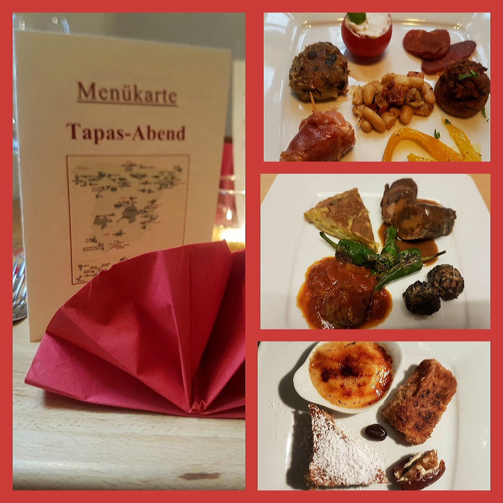

Tapas-Abend für zu Hause
Freitag, 26. Februar und Samstag, 27. Februar 2021
Freuen Sie sich auf einen kleinen Tapas-Abend zu Hause!
Wir bringen Ihnen ein Tapas-4-Gang-Menü mit kalten und warmen Tapas, einer kleinen Käseauswahl
und eine Auswahl an süßen Tapas zum Abschluss.
26,00 € pro Person
Weinempfehlung zum Menü:
2019 'Caballero Para Jinenez' Tinto DO, trocken
Irimpa, La Mancha, Spanien
Cuvee aus Cabernet Sauvignon und Syrah aus biologischem Anbau
0,75 l 5,00 €
2018 ENATE Tapas Tempranillo DO, trocken
Enate, Somontano, Spanien
aus Tempranillo, Merlot und Cabernet Sauvignon
0,75 l 8,20 €
Reservierungen nehmen wir per Mail weincafe@t-online.de
und Telefon 06483/805144 bis zum 21. Februar
2021
an.
Wir bitten alle die einen Gutschein für den Tapas-Abend haben, sich frühzeitig zu melden,
da wir nur ein bestimmtes Kontigent an Menüs haben.
Sie könnnen ihren Gutschein aber auch gerne später im WeinCafé als Wertgutschein einlösen oder zu einem
anderen Menüabend.

Flammkuchen-Donnerstag
Jeden Donnerstag zwei Flammkuchen ihrer Wahl und eine Flasche (0,75 l) Weiß- oder Rotwein für 19,90 €.